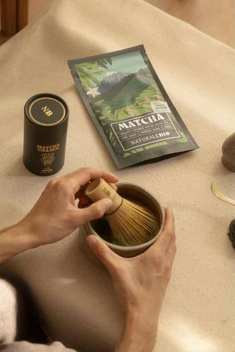
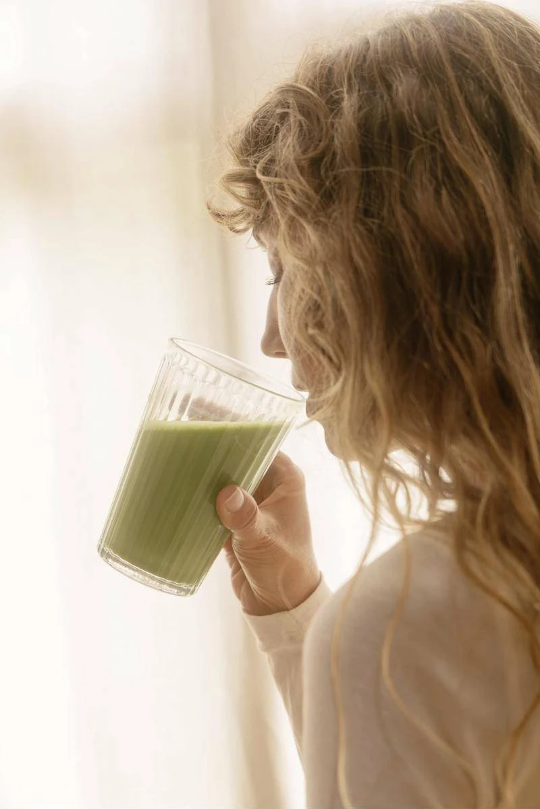
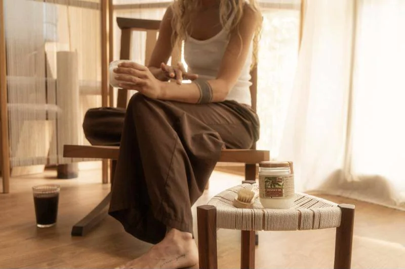
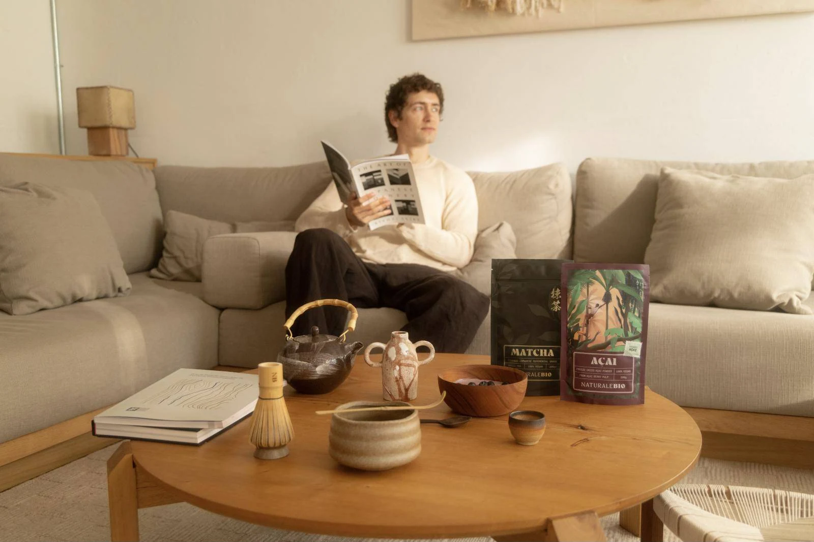
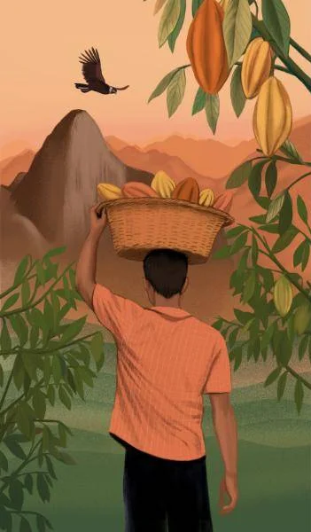
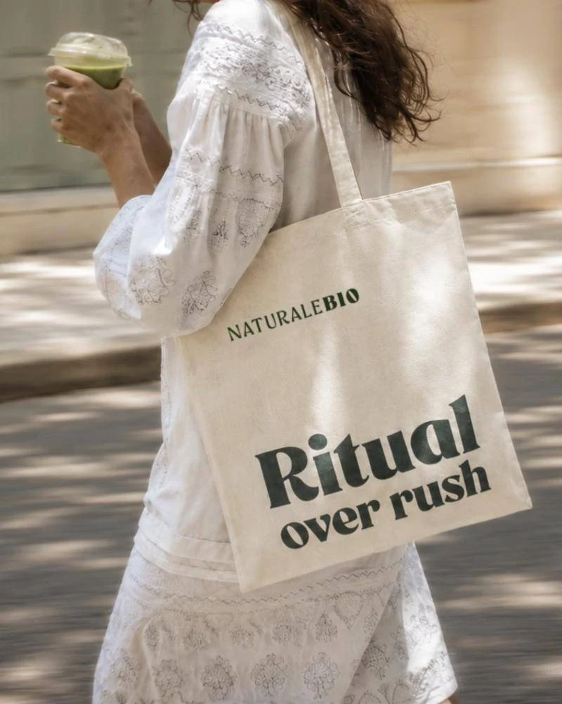

NaturaleBio
Daily rituals, rooted in nature.

01Context
When I joined NaturaleBio as Brand Manager, it was already one of Europe’s top sellers of premium matcha online.
On paper, it was a success.
02Barrier
But 95% of sales came through Amazon. People found us there, by product and by price, and the brand barely existed outside it. Instagram had 1,000 followers, there was no clear positioning, few customers came back, and the emails we sent landed in spam.
A brand that lives on one marketplace depends on it entirely, and is easy to swap for a cheaper one.

03Goal
So the goal was to build NaturaleBio beyond Amazon: a brand people want to return to, and the first thing they think of for small, everyday acts of self-care.
04My role
I went on to lead it as Brand & Consumer Marketing Lead, owning the brand platform, e-commerce campaigns, CRM, social, influencer marketing, partnerships and product launches.

05Listening
I started with our most loyal customers. I went to the people who already loved us. I looked at who engaged with us most on Instagram, the ones who commented, shared and came back, and reached out to them with a simple question: what do you like us for? Then I sent a short survey to our email subscribers, and around 70 people answered.
They talked about quality, a clean ingredient list and organic ingredients. One customer had bought our matcha for three years and never switched brands.
But between the rational reasons, something softer kept coming up: caring, nature’s magic, part of my morning moment.
06Insight
Around the same time, I noticed something in my own mornings. I would start the day with coconut oil pulling, then a shot of ginger and lemon. Small things, but they were how I knew my day had begun.
It became even clearer when I read The Disappearance of Rituals by the philosopher Byung-Chul Han. He describes rituals as “symbolic techniques of making oneself at home in the world”: they give our time the shape that a home gives to space. And he makes a distinction that stayed with me.
A routine is something we get through. A ritual is repetition that gives life meaning.
In a world that keeps pushing us to rush, our customers were holding on to small rituals. The morning matcha, the afternoon cacao. Our products weren’t just part of their routine. They were the rituals that gave shape to their day.

07Personas
I combined the research with our e-commerce data on how people actually buy. It showed three buyers, each with their own moment.
Morning Moment Keeper
Relies on our premium matcha for a calm start to a busy day. Buys it often and drives our repeat purchases.
Reliable Quality Buyer
Shops across the wider range and reorders essentials without thinking twice, mostly on Amazon. Values consistent quality and a fair price.
Intentional Experience Seeker
Chooses food for meaning and pleasure, from ceremonial matcha to açaí. Active on Instagram and gives the brand its emotional pull.
One brand had to speak to all three, without losing the warmth that made it ours.
08Brand platform
From there, I defined the brand platform and turned it into brand guidelines, so the website, emails, social and every partner speak one language.
TaglineDaily Rituals, Rooted in Nature
Pure organic ingredients, made simple for everyday moments
Quietly confident, naturally sensory, thoughtfully simple
Simple Nature


09Bringing it to life
A platform only matters if people feel it everywhere they meet the brand. So we brought the same language to every touchpoint.
Packaging
Postcard-style illustrations of the people who grow and harvest the ingredient. Human care, rooted in nature.
Website & CRM
We share where every ingredient comes from, openly, at a time when many brands don’t. Emails followed up with easy guides that helped people make the products their own.
Social
The biggest barrier was that people didn't know how to use the products. Simple, easy recipes showed them how, and grew our Instagram from 1,000 to 10,200 followers.
Partnerships
We went small and personal. Cozy, female-led gatherings like Les Amis, Novi Club and Muse Duo, and local yoga studios, let people taste the products in a slow, real setting.

10And then
One day, a letter arrived from Sophia in Germany. She had received the Ritual over Rush tote as a gift. Life had been stressful, and she hadn’t let herself pause in a long time. Now the bag hangs where she sees it every day.
“I now celebrate the little rituals more, consciously take breaks for myself, and have even found a little more energy again.”
MOR'KO Kombucha